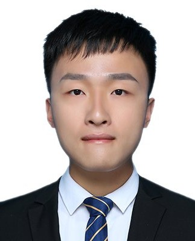
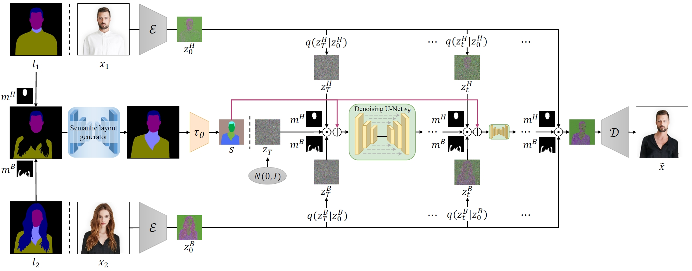
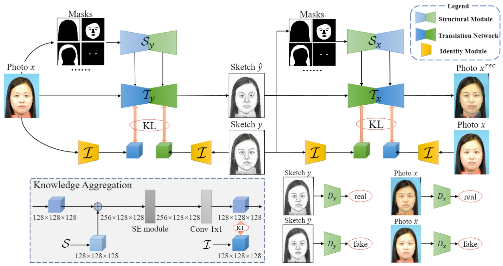
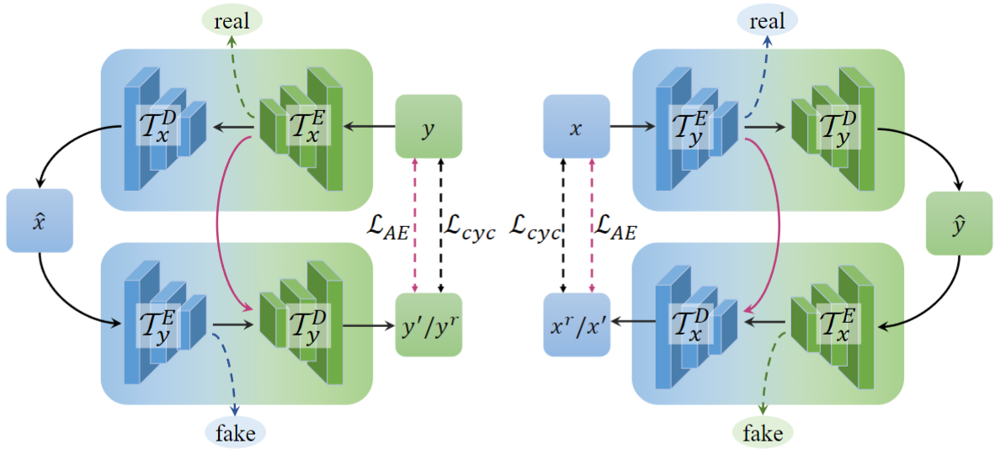

Qinghe Wang (王清和)
|
 |
I am a third-year PhD student at the IIAU-Lab in Dalian University of Technology, under the supervision of Prof. Huchuan Lu (IEEE Fellow) and Prof. Xu Jia. I obtained my Master's degree from Tianjin University supervised by Prof. Pengfei Zhu and Prof. Bing Cao. I obtained my Bachelor's degree from Dalian Maritime University. My research focuses on Video/Image generation with Diffusion models/GANs.
E-mail: aitwqh@163.com
[GitHub] [Google Scholar] [Twitter/X]
|
News!
[2025/2] Release Codes of "MultiShotMaster". Welcome to use!
[2025/12] Release paper "MultiShotMaster: A Controllable Multi-Shot Video Generation Framework".
[2025/10] Release paper "VFXMaster: Unlocking Dynamic Visual Effect Generation via In-Context Learning".
[2025/2] Release paper "CineMaster: A 3D-Aware and Controllable Framework for Cinematic Text-to-Video Generation".
[2024/5] Release a Gradio Demo of "CharacterFactory". Welcome to play!
[2024/5] Release all the Codes of "CharacterFactory". Welcome to use!
[2024/4] Release paper "CharacterFactory: Sampling Consistent Characters with GANs for Diffusion Models".
[2024/3] Release all the Codes of "StableIdentity". Welcome to use!
[2024/1] Release paper "StableIdentity: Inserting Anybody into Anywhere at First Sight", LeCun: OMG.
Internships
 |
Kuaishou
2024.7~Now Research Intern in Kling Team, Kuaishou Technology (Shenzhen)
Supervisors: Xiaoyu Shi, Xintao Wang
Topic: Video Generation
|
 |
ByteDance
2022.4~2022.12 Research Intern in ByteDance Intelligent Creation Lab (Beijing)
Supervisors: Lijie Liu, Qian He
Topic: Image Generation
|
Selected Publications
 |
[Arxiv 2025]
MultiShotMaster: A Controllable Multi-Shot Video Generation Framework
Qinghe Wang, Xiaoyu Shi✉, Baolu Li, Weikang Bian, Quande Liu, Huchuan Lu, Xintao Wang, Pengfei Wan, Kun Gai, Xu Jia✉
[Paper] [Project Page] [Code] [🥇 1st Place at AAAI CVM 2026]
The first controllable multi-shot video generation framework that supports text-driven inter-shot consistency, customized subject with motion control, and background-driven customized scene. Both shot counts and shot durations are variable.
|
 |
[Arxiv 2025]
VFXMaster: Unlocking Dynamic Visual Effect Generation via In-Context Learning
Baolu Li*, Yiming Zhang*, Qinghe Wang*(co-first, Project Lead), Liqian Ma✉, Xiaoyu Shi, Xintao Wang, Pengfei Wan, Zhenfei Yin, Yunzhi Zhuge, Huchuan Lu, Xu Jia✉
[Paper] [Project Page]
A unified reference-based VFX video generation framework allows users to reproduce diverse dynamic effects from reference videos onto target content.
|
 |
[SIGGRAPH 2025 CCF A]
CineMaster: A 3D-Aware and Controllable Framework for Cinematic Text-to-Video Generation
Qinghe Wang*, Yawen Luo*(co-first), Xiaoyu Shi✉, Xu Jia✉, Huchuan Lu, Tianfan Xue✉, Xintao Wang, Pengfei Wan, Di Zhang, Kun Gai.
[Paper] [Project Page]
A 3D-aware and controllable text-to-video generation method allows users to manipulate objects and camera jointly in 3D space for high-quality cinematic video creation.
|
 |
[TIP 2025 CAS-JCR Q1 Top; CCF A]
CharacterFactory: Sampling Consistent Characters with GANs for Diffusion Models
Qinghe Wang, Baolu Li, Xiaomin Li, Bing Cao, Liqian Ma, Huchuan Lu, Xu Jia✉.
[Gradio Demo] [Paper] [Project Page] [Code]
An end-to-end framework allows users to sample new characters with consistent identities for new character creation.
|
 |
[TMM 2025 CAS-JCR Q1 Top]
StableIdentity: Inserting Anybody into Anywhere at First Sight
Qinghe Wang, Xu Jia✉, Xiaomin Li, Taiqing Li, Liqian Ma, Yunzhi Zhuge, Huchuan Lu.
[Paper] [Project Page] [Code] [LeCun: OMG]
A framework enables identity-consistent generation with just one face image, and seamless integration with video/3D generation without finetuning.
|
|
 |
[Arxiv 2023]
HS-Diffusion: Semantic-Mixing Diffusion for Head Swapping
Qinghe Wang, Lijie Liu, Miao Hua, Pengfei Zhu, Wangmeng Zuo, Qinghua Hu, Huchuan Lu, Bing Cao✉.
[Paper] [Code]
A framework enables seamless head swapping, preserving both head and body details while generating natural transition regions.
|
|
 |
[TNNLS 2023 CAS-JCR Q1 Top]
Multi-view knowledge ensemble with frequency consistency for cross-domain face translation
Bing Cao, Qinghe Wang, Pengfei Zhu✉, Qinghua Hu, Dongwei Ren, Wangmeng Zuo, Xinbo Gao.
[Paper] [Code]
A framework enables cross-domain face translation with structural and identity preservation.
|
|
 |
[中国科学：信息科学 CCF A类中文期刊]
基于自判别循环生成对抗网络的人脸图像翻译 (Nickname: CycleGAN--)
中国科学：信息科学 (2022).
王清和, 曹兵✉, 朱鹏飞, 王楠楠, 胡清华, 高新波.
[Paper] [Code]
A framework enables cross-domain face translation by integrating two the discriminators into two encoders.
|
Service
I serve as a reviewer for TPAMI, TIP, SIGGRAPH, CVPR, ECCV, TNNLS, TCSVT, ICLR, ACM MM, ICME, MIR, etc.
Awards
First Prize (🥇 1st Place) at the AAAI CVM 2026 Main Track
China Association for Science and Technology (CAST) Young Talent Support Program - Doctoral Student Special Initiative
Outstanding Master's Thesis of Tianjin University 2023
Gold Award of Huawei Ascend AI Innovation Competition 2023
Third Prize of "Huawei Cup" - the 18th China Postgraduate Mathematical Contest in Modeling 2020
Outstanding Graduates from Liaoning Province 2020
First prize (1st place) of the software competition in Rockwell Automation Dalian Software R&D Center 2019
Third Prize of Chinese College Students Computer Design Contest 2019
Honorable Mention of The Mathematical Contest in Modeling (MCM) 2019
Provincial second prize of “NXP” Cup National University Students Intelligent Car Race Competition 2019
Third Prize of iCAN International Contest of innovation 2018
Meritorious Winner of The Mathematical Contest in Modeling (MCM) 2018
Provincial second prize of “TI” Cup Liaoning Provincial Undergraduate Electronic Design Contest 2018
Provincial second prize of “NXP” Cup National University Students Intelligent Car Race Competition 2018
Provincial second prize of National Undergraduate Electronics Design Contest 2017
{kind=link}
{kind=link}
{kind=link}